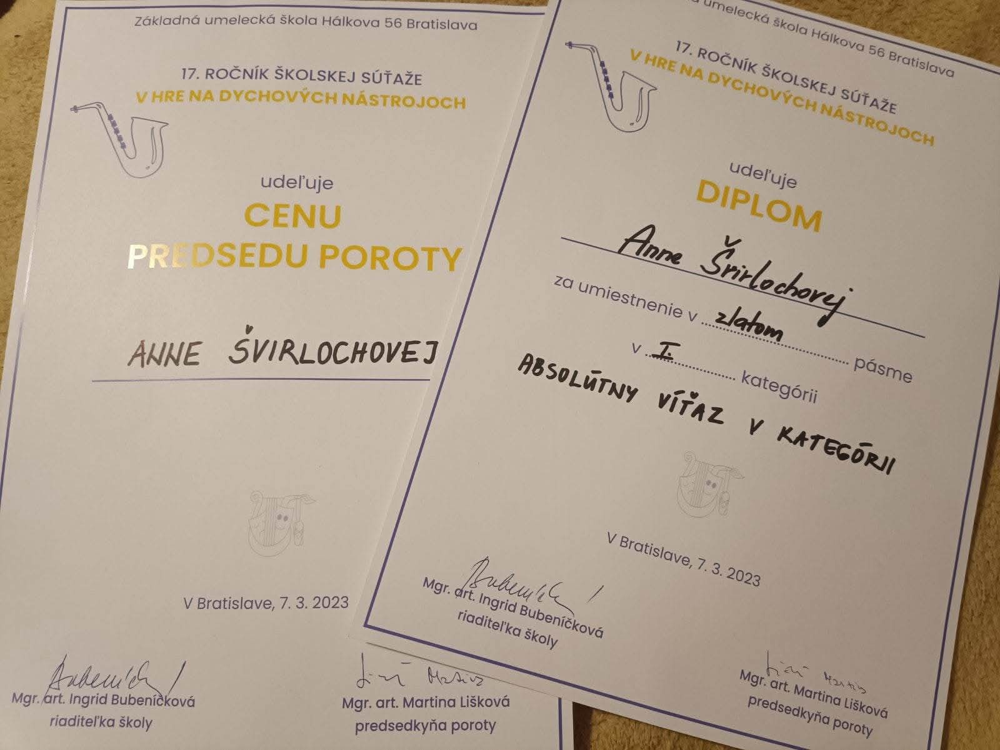
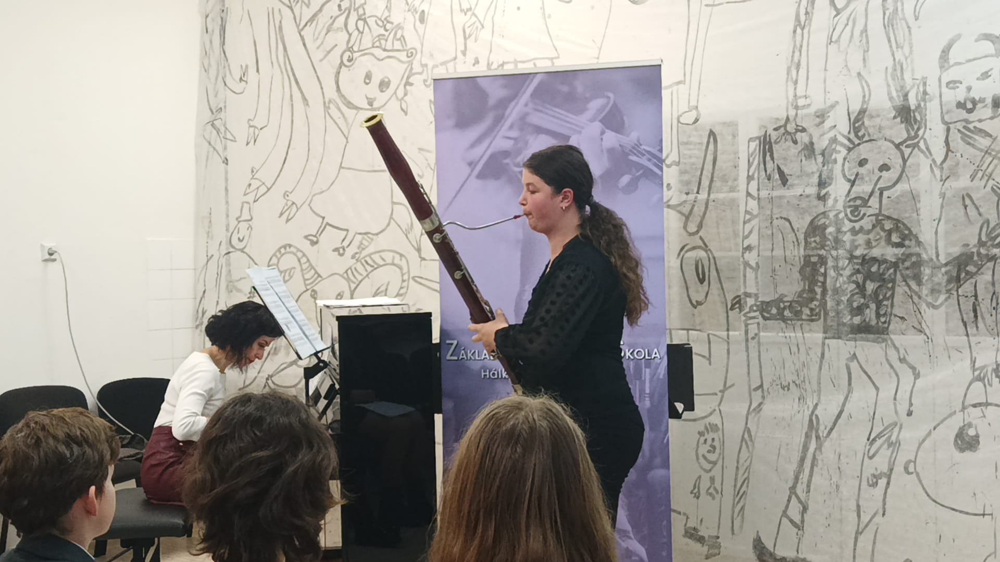
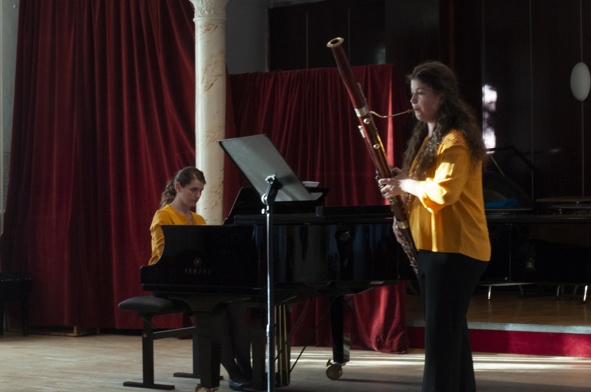
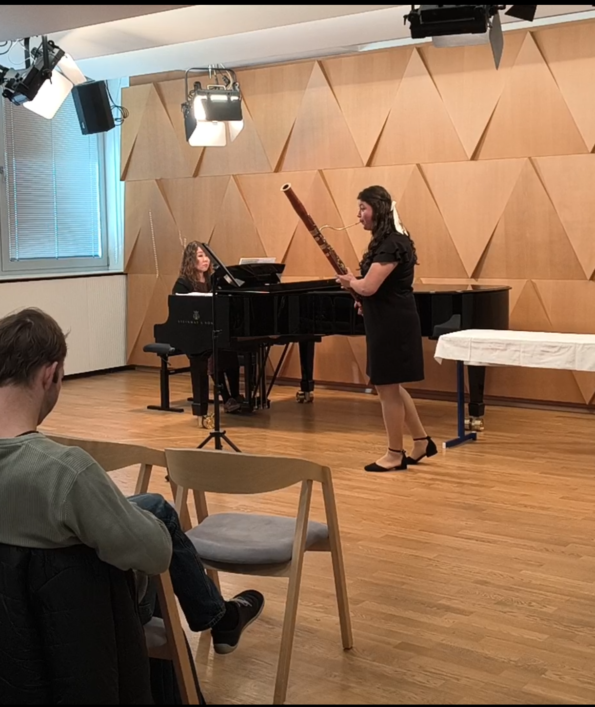
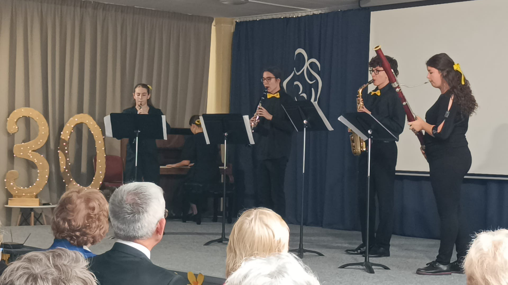
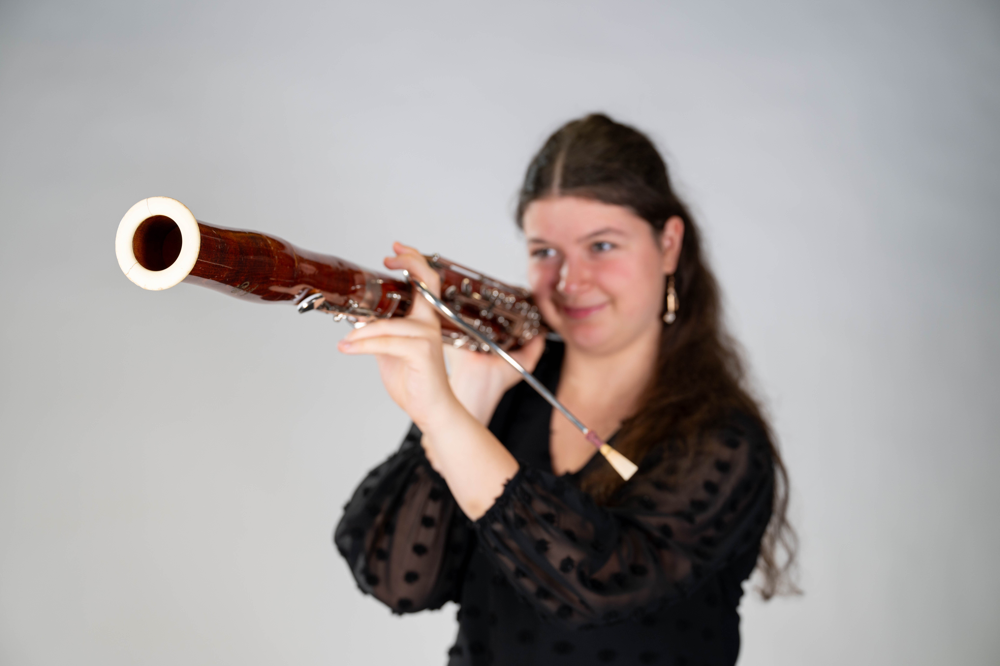
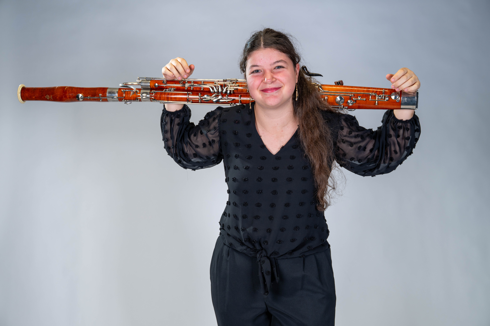
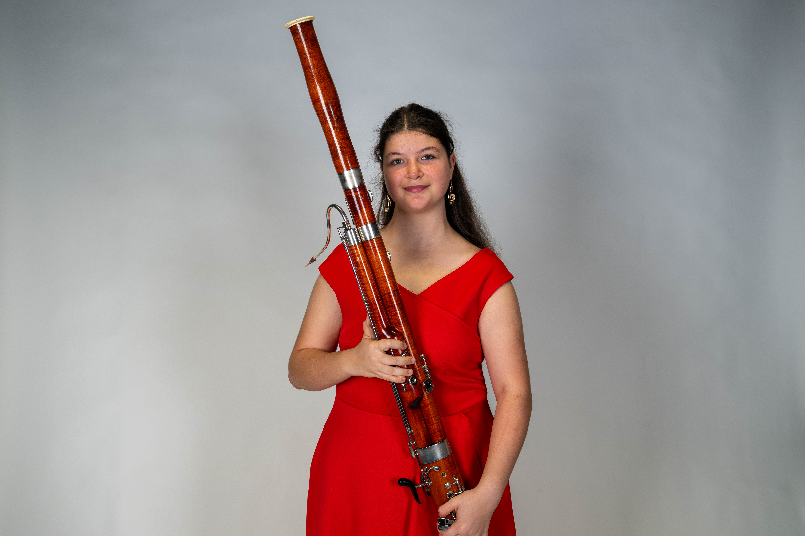
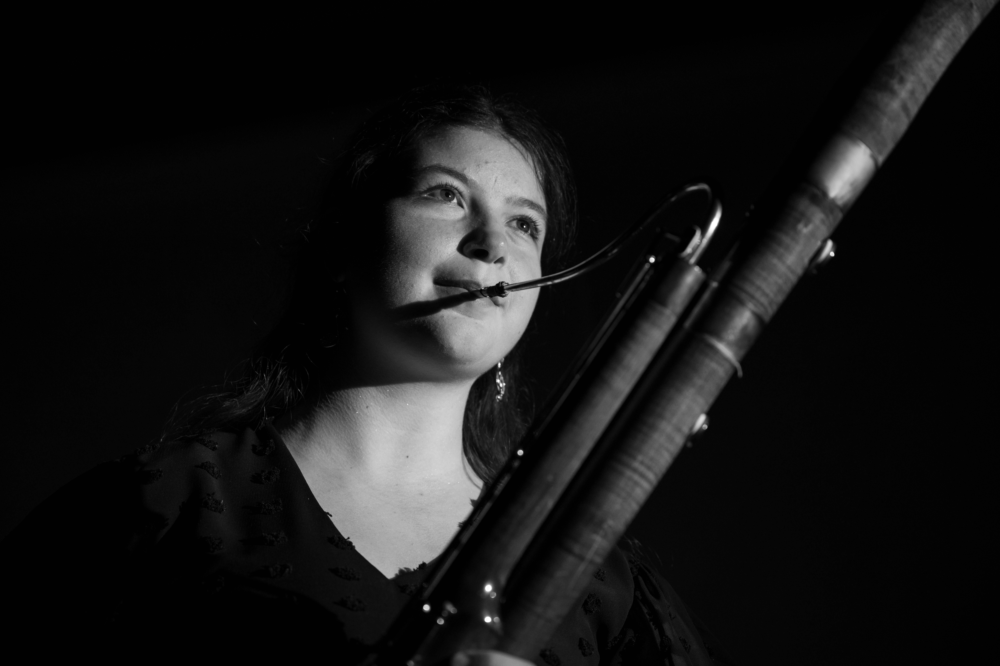

Fagotistka
Anna Švirlochová
Klasická hudba • Fagot • Orchestr
Jsem studentka fagotu na Pražské konzervatoři pod vedením prof. Kořínka.

Fagotistka
Jsem studentka fagotu na Pražské konzervatoři pod vedením prof. Kořínka.

Hudbě se věnuji od dětství. Absolvovala jsem studium ZUŠ hry na zobcovou flétnu pod vedením mgr. Gálovej a mgr. Turčinovej na ZUŠ sv. Cecílie.
Mé první setkání s fagotem bylo v roce 2021. Studovala jsem na ZUŠ Hálkova Bratislava pod vedením p. uč. Košického a také na Konzervatóriu Tolstého v Bratislavě pod vedením prof. Rottera.
Zúčastňuji se masterclassů, soutěží i koncertů.
2026 – současnost
Orchestrální projekty a koncertní vystoupení. 1. fagot
2024 – současnost
Studium fagotu pod vedením prof. Kořínka. Příprava na sólové a orchestrální výstupy.
2023 – 2024
Členka symfonického dechového orchestru, soutěže a koncerty. 1. fagot.
2021 – 2024
Přípravné studium fagotu pod vedením prof. Rottera.
První hudební skušenosti se hrou na fagot.
17. ročník súťaže ZUŠ v hre na dychových nástrojoch
Absolútny víťaz • Cena predsedu poroty
18. ročník súťaže ZUŠ v hre na dychových nástrojoch
Zlaté pásmo
Pardubické dechy
Čestné uznanie













{kind=link}
{kind=link}
{kind=link}
{kind=link}